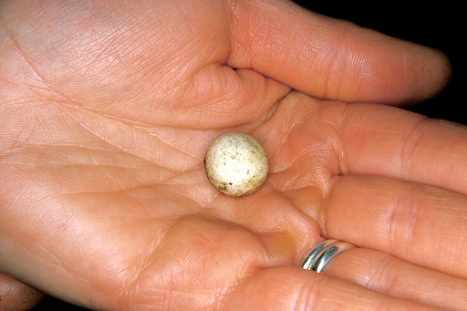

3 The monotremes¶
The echidna and the duck-billed platypus, which are the only egg-laying mammals, are so distinct that they are assigned to a discrete subclass, the Prototheria, which includes the order Monotremata, separate from the more familiar and well-studied placental mammals. These two animals are termed ‘part-reptile, part-mammal’, a phrase that will be examined more critically in Section 3.1.

Figure 15 An echidna egg
An extraordinary feature of monotremes that no other modern mammal has retained is that they lay eggs. This echidna egg (Figure 15) is tiny, only about the size of a marble. Early mammals must have laid eggs in the same way, a feature that they inherited from their reptile ancestors.
The reptile embryo feeds on a supply of highly nutritious yolk and, by the time the embryo hatches, it is sufficiently well-developed to go looking for food on its own.
By contrast, the platypus and echidna are very different from their reptilian ancestors. Their eggs are smaller, containing only a limited amount of yolk, and their young hatch in a far less developed state. They need a lot more nourishment if they’re going to grow and survive.
Platypus young develop without having to leave their mother’s burrow. Four months after hatching, a youngster emerges from the burrow for the first time and already it has grown to almost full adult size. That is thanks to an amazing form of nourishment that is a defining feature of all mammals: milk.
Here are two National Geographic video clips with more information about the platypus and echidna. Make sure you open these links in a new tab or window, so you can easily return to this page.
The platypus is semi-aquatic and can be found in streams and rivers in Eastern Australia, from tropical rain forests in Queensland to the much colder highlands of Tasmania, which feature in this video.
National Geographic: platypus video
In this video of an echidna you can see the developing egg and the young echidna, called a puggle. The echidna is described in the video as ‘weird’, which is a description that is not really appropriate.
National Geographic: echidna video
Activity 1¶
Timing: Allow about 10 minutes
Question¶
Write down the mammalian features evident in monotremes. Is their egg-laying habit similar in all ways to that displayed by reptiles?
Answer¶
Both echidnas and the platypus have fur – though in the former, some of the hairs are thickened in the form of spines.
Both animals produce milk – they have mammary glands, though well-defined nipples are not evident.
Immature young hatch from their soft-shelled eggs after about 10 days; reptiles typically hatch in a much more mature state. Thereafter, a young monotreme, though no longer carried, remains dependent on the mother’s milk – for more than six months in the case of echidnas.
3.1 How should we think of monotremes?¶
Years ago, biologists often thought of the term ‘egg-laying mammal’ as synonymous with ‘reptile-like mammal’ or ‘primitive mammal’. Now, with our greater understanding of monotreme biology, these emotive terms are disapproved of, since these animals have so many authentic mammalian features. For example, if echidnas didn’t lay eggs, you might be forgiven for thinking of this animal as another species of hedgehog. However, the hedgehog is a placental mammal. Although the period of development within the egg is relatively brief, many aspects of reproduction and maternal care in the monotremes are distinctly mammalian.
It would be wrong to describe the monotremes as genuinely primitive or unsuccessful. They are specialist feeders; the platypus feeding on invertebrates (e.g. freshwater shrimp, insect larvae or small molluscs) living in the bottom of streams, while echidnas are terrestrial carnivores. The word ‘primitive’ implies a similarity with ancestral types, but in terms of lifestyle and anatomy, there’s not a lot to link monotremes with the ancestral mammals typified by Megazostrodon (shown earlier in Figure 4).
There are further reasons NOT to think of monotremes as ineffective species that haven’t quite ‘made it’ in an evolutionary sense. As part of their specialist form of feeding, the platypus has highly developed sense organs. It has eyes and ears but can cover these when it is underwater. It then relies on the sensory cells in its rubbery beak. One type of sense cell can detect touch. A second group of sensory cells is sensitive to the tiny electrical charges that are produced by living organisms. The platypus uses this remarkable sense organ as a scanner, looking for prey items on the bed of the river that is its home. If we think of numbers as a measure of an animal’s success, monotremes are certainly successful. Echidnas – at least the short-nosed species – are described as ‘quite common across their geographical range’. The platypus inhabits a particular type of environment (i.e. it occupies an environmental niche) that is threatened by human habitation, so numbers fell soon after the beginnings of European settlement in Australia in the 18th century. Recent conservation measures have meant that the species is no longer under severe threat.
And how long have monotremes existed? A platypus fossil found in Queensland is about 25 million years old, but the oldest monotreme fossil (a jaw bone) is over 100 million years old. Their evolution could therefore be described as conservative, with little evidence of major changes over time. However, biologists remain ignorant about what the ancestors of monotremes looked like and what historic relationship they had with the evolutionary lines that gave rise to marsupial and placental mammals.